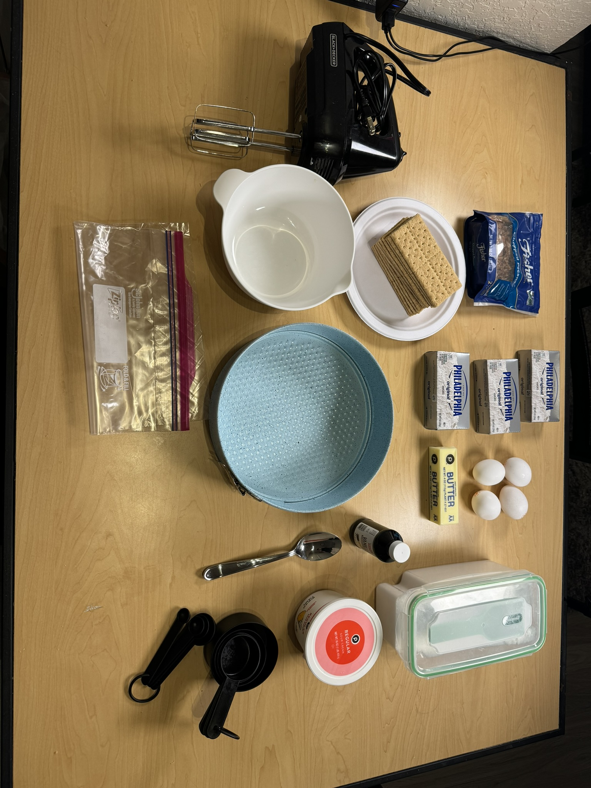
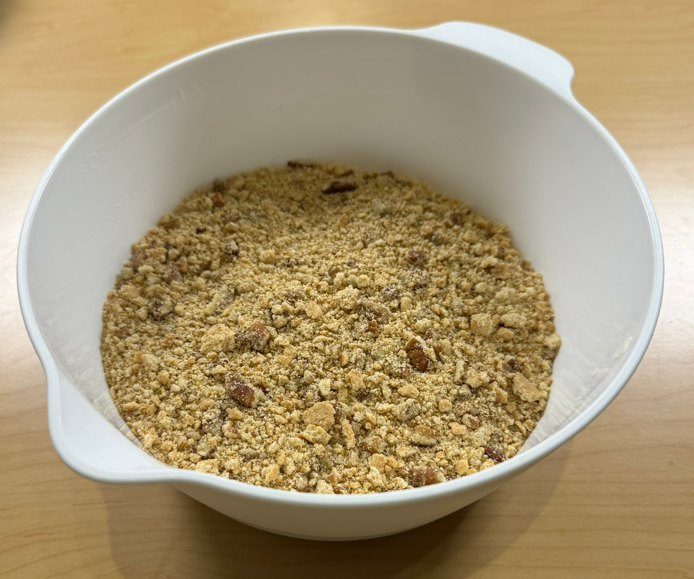
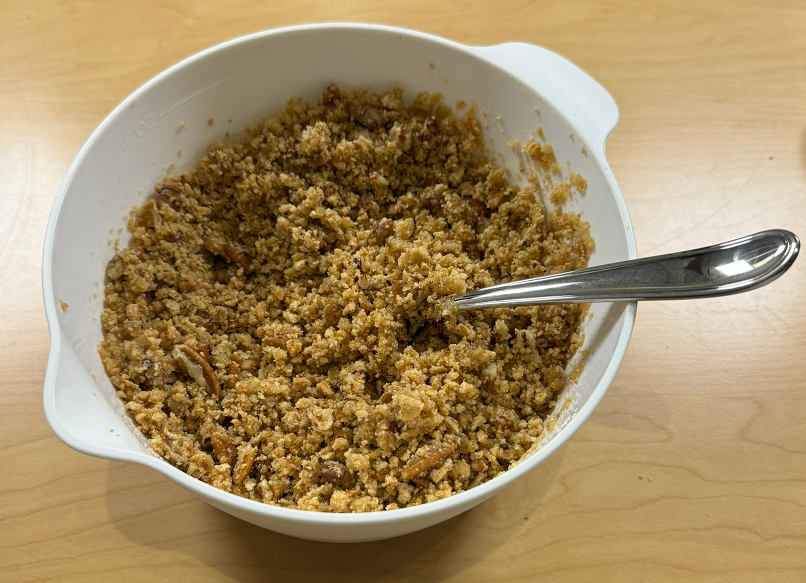
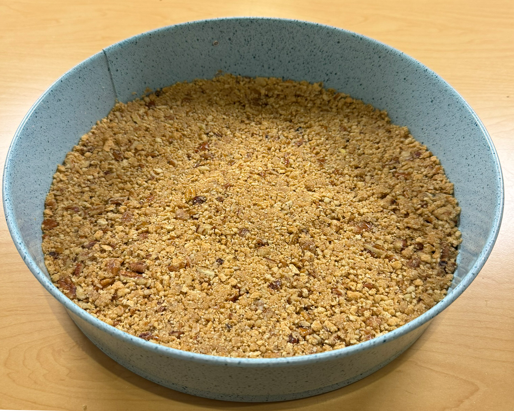
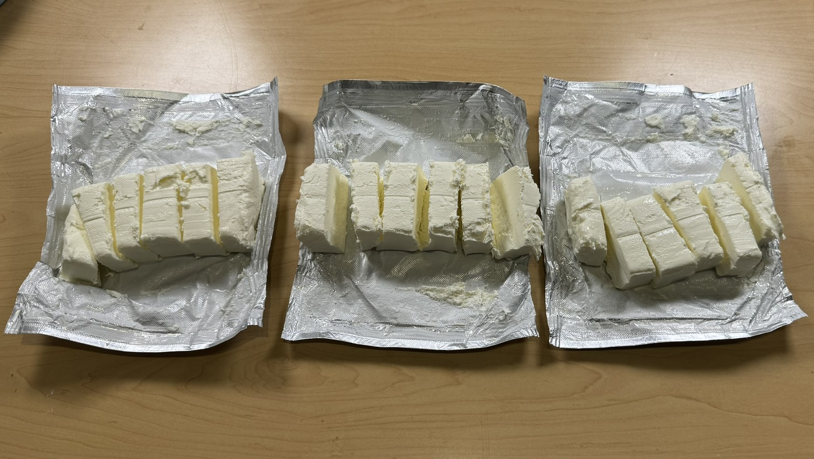
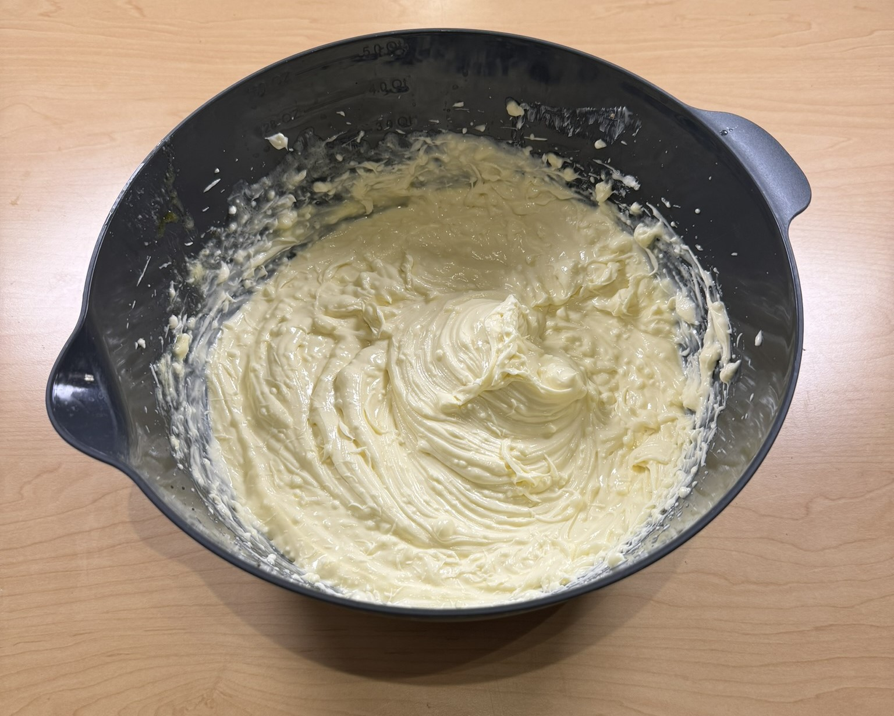
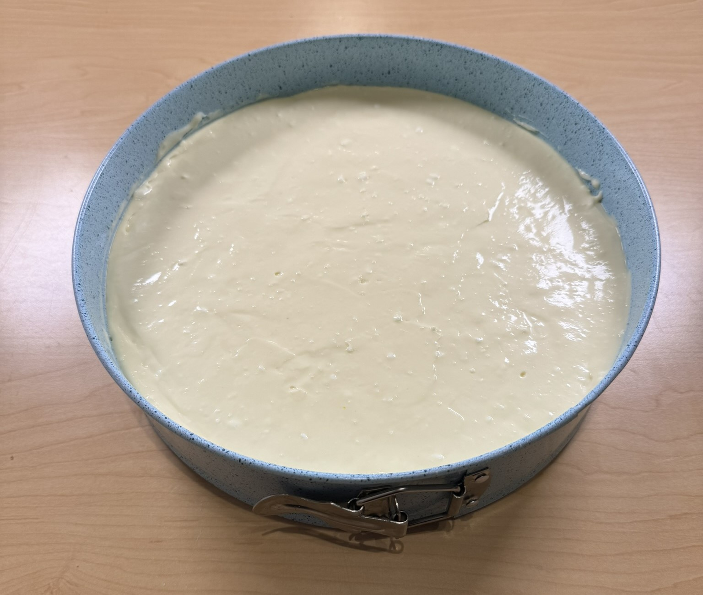
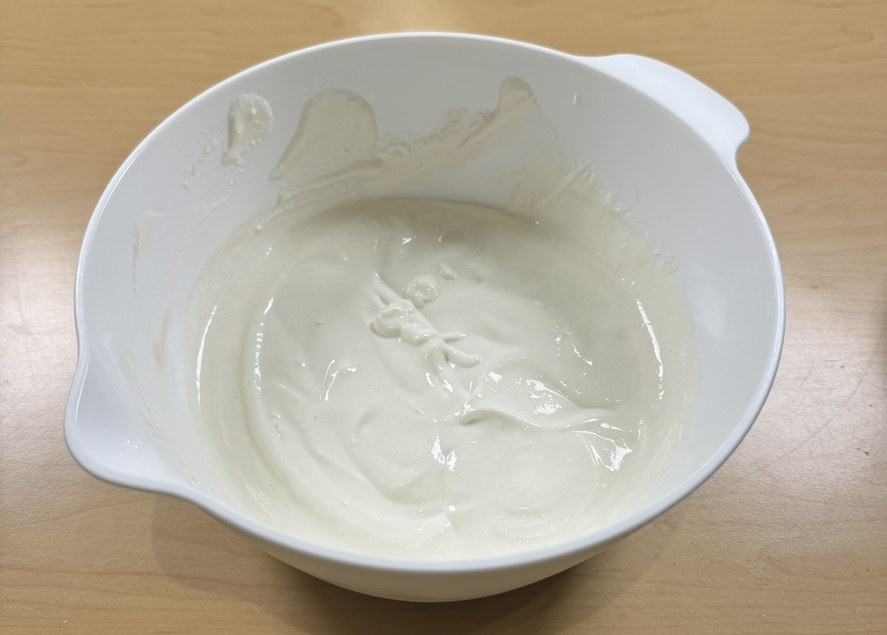
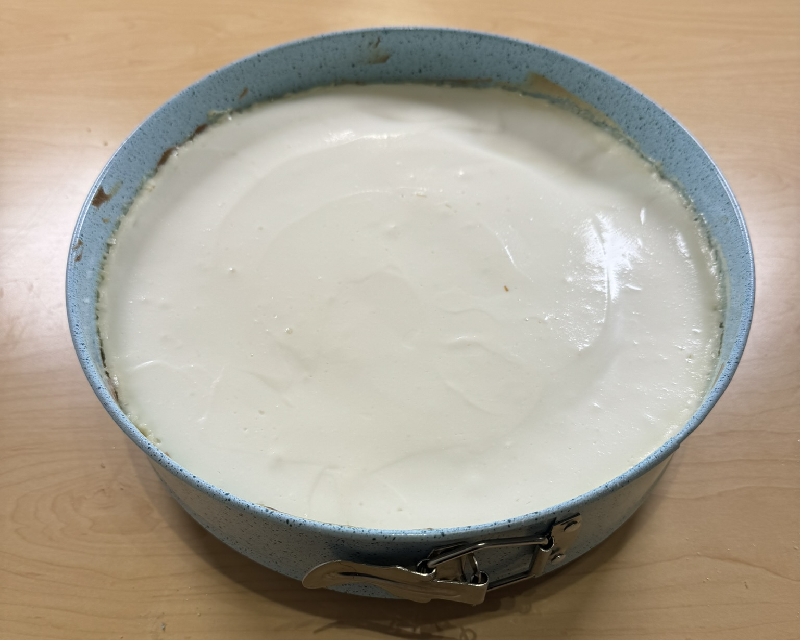
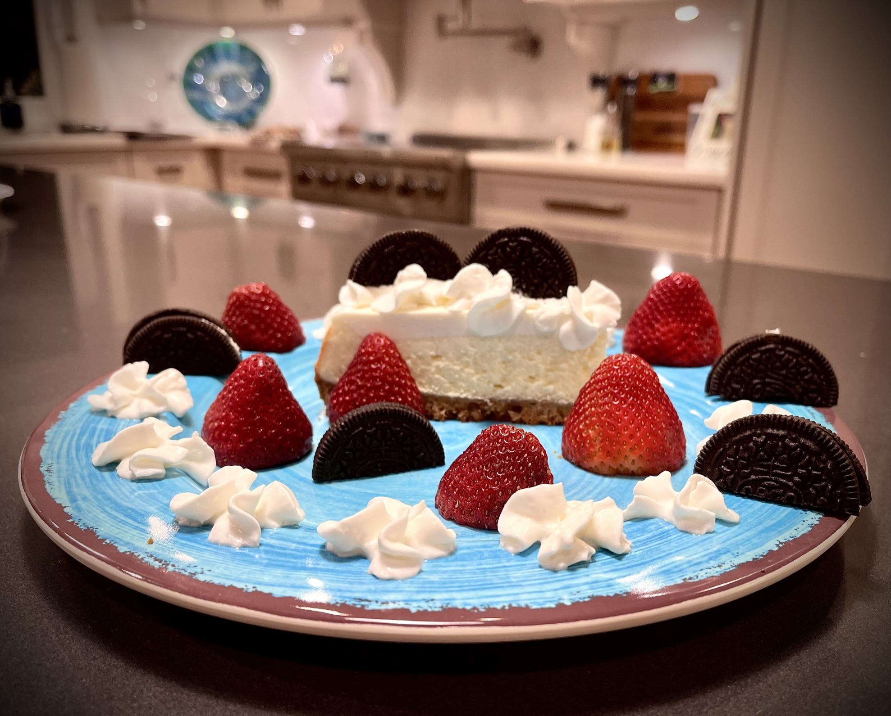

Articles & Docs
Michael's World Famous: Grilled Cheesecake
Written by MDCran. Exclusively for Friends & Family.
RecipeAt the request of many, here is the recipe for the double layer cheesecake. Enjoy!
Overview
Before we begin, make sure you have the following tools accessible.
- Table Top Mixer (or Handheld Mixer)
- 10 inch Spring Pan
- Measuring Cups & Spoons
- Kitchen Utensils (Such as Forks, Spoons, & Knives)
- Mixing Bowls
- 1 Gallon Ziploc Bags
- Oven
- Microwave
The ingredients you will be needing for this recipe are the following.
- Graham Crackers
- Sugar
- Unsalted Butter
- Pecans
- Philadelphia Cream Cheese
- Eggs
- Vanilla Extract
- Sour Cream
Quick Start
Ingredients
Graham Cracker Crust
-
(12 sheets) Graham Crackers
-
(2 tbsp.) Sugar
-
(1 stick) Unsalted Butter
-
(1 cup) Chopped Pecans
Cheesecake Layer #2
-
(1 pint) Sour Cream
-
(1 tsp.) Vanilla Extract
-
(2 tbsp.) Sugar
Cheesecake Layer #1
-
(3 bricks) Philadelphia Cream Cheese
-
(1 cup) Sugar
-
(4) Eggs
-
(1 tsp.) Vanilla Extract
Recommended Equipment
-
Handheld Mixer
-
10 Inch Spring Pan
-
Measuring Cups & Spoons
-
Mixing bowls
-
1 Gallon Ziploc Bags
Instructions
Preparation
- Place 1 stick of unsalted butter, 4 eggs, and
3 philadelphia cream cheese bricks on the
counter top.
- Preheat Oven to 325 F (160C)
- Ensure your baking area is clean, and layout
all your ingredients.

ALL INGREDIENTS & TOOLS
Graham Cracker Crust
- Take 12 graham cracker sheets and place in a large
1 gallon ziploc bag.
- Measure 1 cup of pecans and pour into the same
large 1 gallon ziploc bag as the graham crackers.
- Crush the graham cracker sheets and pecans until
they are fi ne crumbs.
- Pour the graham cracker and pecan crumbs into a
mixing bowl.
- Use a microwave safe bowl and melt the 1 stick of
unsalted butter in the microwave. Then pour the
melted unsalted butter into the mixing bowl that
contains the graham cracker and pecan crumbs.
- Add 2 tablespoons of sugar to the mixture.
- Mix-by-hand thoroughly with a fork or spoon
until all sugar and melted butter has been absorbed
into the graham cracker and pecan crumbs.
After ensuring your spring pan sides are locked,
- After ensuring your spring pan sides are locked,
pour the crumbs into the spring pan and pat the
crumbs to be around ½ inch thick in all areas.

STEPS 1 - 4

STEPS 5 - 7

STEP 8
BEFORE MOVING ON
Clean Mixing Bowl & have Hand Mixer or Tabletop Mixer accessible.
Cheesecake Layer #1
- Open all three cream cheese bricks and cut
them into sections to make mixing easier.
- Crack all 4 eggs into a mixing bowl and
slowly add the cream cheese slices while
mixing at low speed.
- Add 1 cup of sugar and 1 teaspoon of vanilla
extract, then continue mixing at a low speed
until the cheesecake batter is smooth.
- Pour the cheesecake batter into the spring
pan on top of the graham cracker crust. (Use
a spoon, knife, or shake the spring pan to level
out the batter.)
- Bake at 325°F (160°C) for 40 minutes, then
place it on the counter to cool for 2 hours.

STEP 1

STEPS 2 - 3

STEP 4
BEFORE MOVING ON
Clean Mixing Bowl & let Cheesecake Layer #1 cool for 2 hours.
Turn on grill to steady temperature of 450 F (230C). If no access to grill preheat oven to 450 F (230C).
Cheesecake Layer #2
- Add 1 pint of Sour Cream to a mixing bowl.
- Add 1 teaspoon of Vanilla Extract and
2 tablespoons of sugar.
Mix by hand till smooth and
- Mix by hand till smooth and creamy.
(Ensure that all sugar and vanilla extract has
been mixed from the edges and the bottom of the
mixing bowl.)
- Pour the cheesecake batter into the spring pan
on top of the 1st layer of cheesecake. (Use a
spoon / knife or shake the spring pan to level it
out the batter.)
- Grill (or bake) at 450 F (230C) for 7 minutes, then place on
the counter to cool for 2 hours.

STEPS 1 - 3

STEPS 4 - 5
BEFORE MOVING ON
Let Cheesecake Layer #2 cool for 2 hours.
For the best result, place cheesecake in refrigerator with tin foil on top of the spring pan for 24 hours.

FINAL RESULT
Made by,

Michael D. Cran
Graham Cracker Crust
-
(12 sheets) Graham Crackers
-
(2 tbsp.) Sugar
-
(1 stick) Unsalted Butter
-
(1 cup) Chopped Pecans
Cheesecake Layer #2
-
(1 pint) Sour Cream
-
(1 tsp.) Vanilla Extract
-
(2 tbsp.) Sugar
Cheesecake Layer #1
-
(3 bricks) Philadelphia Cream Cheese
-
(1 cup) Sugar
-
(4) Eggs
-
(1 tsp.) Vanilla Extract
Recommended Equipment
-
Handheld Mixer
-
10 Inch Spring Pan
-
Measuring Cups & Spoons
-
Mixing bowls
-
1 Gallon Ziploc Bags
Instructions
Preparation
- Place 1 stick of unsalted butter, 4 eggs, and 3 philadelphia cream cheese bricks on the counter top.
- Preheat Oven to 325 F (160C)
- Ensure your baking area is clean, and layout all your ingredients.

Graham Cracker Crust
- Take 12 graham cracker sheets and place in a large 1 gallon ziploc bag.
- Measure 1 cup of pecans and pour into the same large 1 gallon ziploc bag as the graham crackers.
- Crush the graham cracker sheets and pecans until they are fi ne crumbs.
- Pour the graham cracker and pecan crumbs into a mixing bowl.
- Use a microwave safe bowl and melt the 1 stick of unsalted butter in the microwave. Then pour the melted unsalted butter into the mixing bowl that contains the graham cracker and pecan crumbs.
- Add 2 tablespoons of sugar to the mixture.
- Mix-by-hand thoroughly with a fork or spoon until all sugar and melted butter has been absorbed into the graham cracker and pecan crumbs. After ensuring your spring pan sides are locked,
- After ensuring your spring pan sides are locked, pour the crumbs into the spring pan and pat the crumbs to be around ½ inch thick in all areas.



BEFORE MOVING ON
Clean Mixing Bowl & have Hand Mixer or Tabletop Mixer accessible.
Clean Mixing Bowl & have Hand Mixer or Tabletop Mixer accessible.
Cheesecake Layer #1
- Open all three cream cheese bricks and cut them into sections to make mixing easier.
- Crack all 4 eggs into a mixing bowl and slowly add the cream cheese slices while mixing at low speed.
- Add 1 cup of sugar and 1 teaspoon of vanilla extract, then continue mixing at a low speed until the cheesecake batter is smooth.
- Pour the cheesecake batter into the spring pan on top of the graham cracker crust. (Use a spoon, knife, or shake the spring pan to level out the batter.)
- Bake at 325°F (160°C) for 40 minutes, then place it on the counter to cool for 2 hours.



BEFORE MOVING ON
Clean Mixing Bowl & let Cheesecake Layer #1 cool for 2 hours.
Turn on grill to steady temperature of 450 F (230C). If no access to grill preheat oven to 450 F (230C).
Clean Mixing Bowl & let Cheesecake Layer #1 cool for 2 hours.
Turn on grill to steady temperature of 450 F (230C). If no access to grill preheat oven to 450 F (230C).
Cheesecake Layer #2
- Add 1 pint of Sour Cream to a mixing bowl.
- Add 1 teaspoon of Vanilla Extract and 2 tablespoons of sugar. Mix by hand till smooth and
- Mix by hand till smooth and creamy. (Ensure that all sugar and vanilla extract has been mixed from the edges and the bottom of the mixing bowl.)
- Pour the cheesecake batter into the spring pan on top of the 1st layer of cheesecake. (Use a spoon / knife or shake the spring pan to level it out the batter.)
- Grill (or bake) at 450 F (230C) for 7 minutes, then place on the counter to cool for 2 hours.


BEFORE MOVING ON
Let Cheesecake Layer #2 cool for 2 hours.
For the best result, place cheesecake in refrigerator with tin foil on top of the spring pan for 24 hours.
Let Cheesecake Layer #2 cool for 2 hours.
For the best result, place cheesecake in refrigerator with tin foil on top of the spring pan for 24 hours.

FINAL RESULT
Michael D. Cran